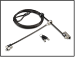
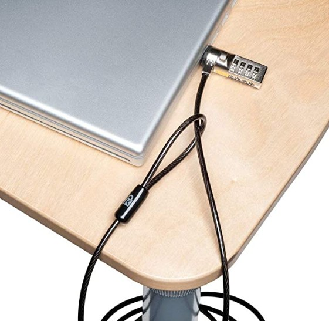
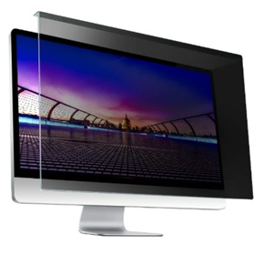
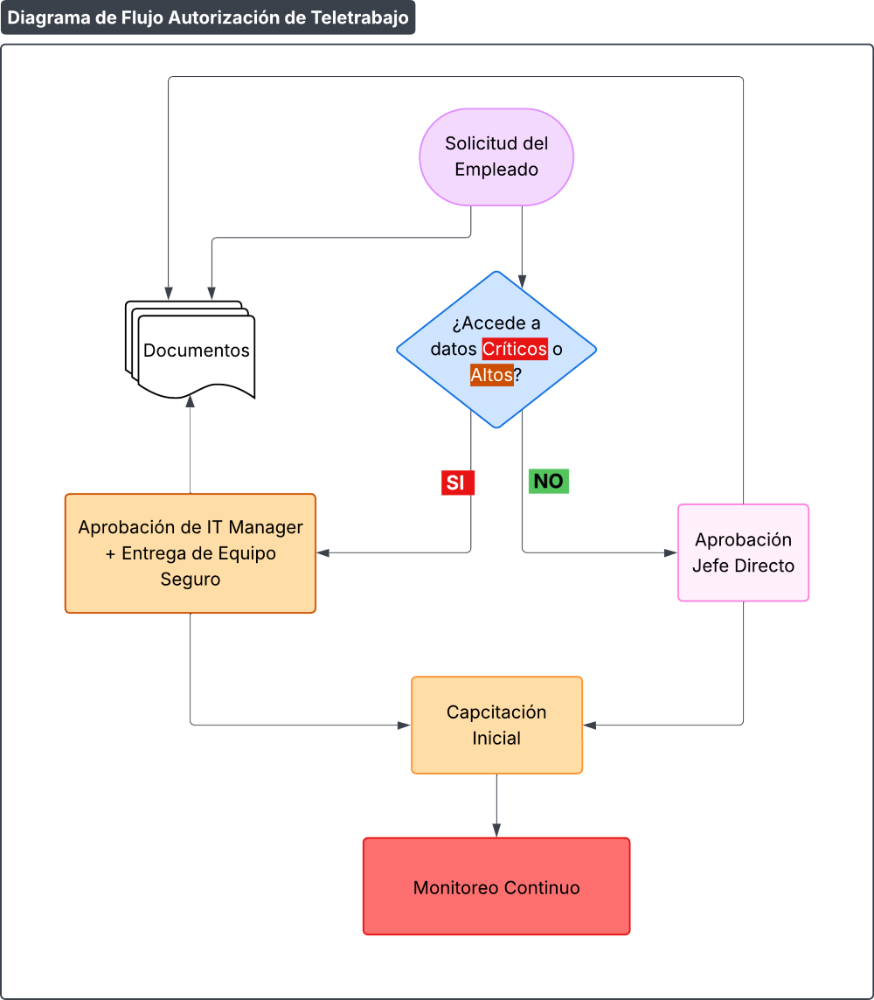

Procedimiento de Gestión Segura de Teletrabajo
1 OBJETIVO
Establecer controles para mitigar riesgos en entornos remotos, garantizando la protección de activos críticos (CATIA/NX, SIP/SIP4.0), y en cumplimiento de normativas de ISO/IEC 27001:2022, así como los requisitos del marco TISAX y clientes automotrices.
2 REQUISITOS PARA TELETRABAJO
Política Clave
"Solo personal autorizado puede acceder a sistemas críticos desde remoto".
| Área | Requisito | Ejemplo |
|---|---|---|
| Acceso Seguro |
- VPN obligatoria - MFA (Microsoft Authenticator) |
Bloqueo de conexiones sin VPN a servidor interno |
| Dispositivos |
- Laptops corporativas con BitLocker - Prohibido usar dispositivos personales sin declarar en Snipe-IT |
Inventario de equipos remotos con GPS |
| Entorno Físico |
- Espacio de trabajo privado (no cafeterías o bares) - Bloqueo de pantalla automático tras 5 minutos de inactividad |
Checklist de inspección remota aleatoria |
3 CONTROLES POR TIPO DE ENTORNO
a) Entornos Privados (Home Office):
- Protección de Datos:
- 🚫 No transferir datos sensibles a dispositivos personales
- Comportamiento:
- 🚫 No compartir credenciales con familiares o amigos
b) Entornos Públicos (Viajes):
- Medidas Anti-Robo:
- Laptops con cable de seguridad Kensington


Cable de seguridad Kensington para laptops
- USB cifrados para transporte de archivos (ej.: 7-Zip, WinRAR o Veracrypt) Instructivo: I214-IT-1 Instructivo uso 7-Zip, WinRAR
- Laptops con cable de seguridad Kensington
- Conducta:
- Nunca dejar dispositivos desatendidos. (Bloquear sesión)
4 CAPACITACIÓN ESPECÍFICA
Módulo para Teletrabajadores:
- Duración: 1 hora (anual o al iniciar teletrabajo)
- Contenidos:
- Configuración y utilización segura de VPN
- Protocolo para reportar pérdida/robo de dispositivos (<1h)
- Simulacro:
- Email falso de "Soporte IT" pidiendo credenciales de VPN
5 MONITOREO Y SANCIONES
Herramientas:
- SIEM: Alertas por accesos remotos anómalos (ej.: horarios no laborales)
- Intune: Borrado de datos remoto de laptops perdidas
Sanciones por Incumplimiento:
| Falta | Sanción |
|---|---|
| Conexión sin VPN | Suspensión de acceso remoto por 7 días |
| Uso de USB no cifrado | Amonestación escrita + capacitación |
6 PLANTILLAS CLAVE
A. Checklist de Seguridad para Teletrabajo
| Ítem | Cumple (✅/❌) | Comentarios |
|---|---|---|
|
¿Está en conocimiento y ha aceptado la Política de Teletrabajo? Firma de acuerdo de Teletrabajo. |
✅ | - |
| ¿Realizó la capacitación especifica requerida? | ✅ | - |
| ¿VPN configurada y conectada antes de acceder a Servidores? | ✅ | - |
| ¿Espacio de trabajo privado? | ❌ | "Se requiere persiana" |
B. Comunicado de Política de Teletrabajo
Asunto: 🏠 Nueva Guía de Teletrabajo (Home Office) Seguro
"Estimado equipo,
Recordamos que el acceso a los servidores de PRODISMO SRL desde casa requiere:
- VPN activa (Solicitud de activación a través de Formulario)
Link: F512-IT-1 Solicitud Configuración de VPN - MFA Multiple factor de autenticación activado.
- No imprimir diseños/planos sin autorización.
Incumplimientos serán sancionados.
Atentamente,
7 EJEMPLO DE IMPLEMENTACIÓN PARA BMW
- Requisito Especial:
- "Diseñadores CATIA deben usar pantallas con filtro de privacidad en
teletrabajo"

Filtro de privacidad para pantallas - Requerido por BMW
- "Diseñadores CATIA deben usar pantallas con filtro de privacidad en
teletrabajo"
- Control:
- Entrega de filtros físicos + verificación por videollamada
8 RECOMENDACIONES PARA CUMPLIR TISAX
- Auditorías Sorpresa: Solicitar selfies del entorno de trabajo a teletrabajadores
- Clientes Automotrices:
- VW: Reportar lista de empleados autorizados para teletrabajo
- Mercedes: Enviar evidencias de cifrado en dispositivos móviles
- Tecnología:
- Implementar Zero Trust Network Access (ZTNA) para reemplazar VPN tradicional
9 FLUJO DE AUTORIZACIÓN DE TELETRABAJO

Diagrama de Flujo de Autorización de Teletrabajo
10 REVISIONES DEL DOCUMENTO
| Rev. N° | Fecha | Descripción |
|---|---|---|
| 0 | 25/8/2025 | Primera Emisión del documento |
| 1 | 16/1/2026 | Revisión completa del documento |